Noutăți
Învingătorii activității sportive „Festivalul Sportului și Prieteniei”
{kind=link}
{kind=link}
{kind=link}
{kind=link}

Sărituri în lungime:
Locul I Serdiuc Gabriela, cl.a VIII-a
Locul II Rozlovan Adelina, cl.a VIII-a
locul III Cornos Tina, Grosu Natalia, cl.a VII-a
Sărituri în lungime:
Locul I Trigub Maxim, cl.a IX-a
Locul II Pascal Marin, cl.a IX-a, Omelian Maxim, cl.a VII-a
Locul III Balan Alexandr, cl.a VII-a
Ridicarea trunchiului 30 sec.
Locul I Rusu Adrian, cl. a V-a
Locul II Nirean Bogdan, cl.a VIII-a
Locul III Pavliuc Gabriel, cl.a IX-a
Ridicarea trunchiului
Locul I Serdiuc Gabriela,cl. a VIII-a, Rozlovan Adelina cl. a VIII-a
Locul II Carauș Renata,cl. a IX-a
Locul III Juc Mihaela,cl.a VII-a, Gratii Nicoleta cl.V-a
Alergarea la 60 m
Locul I Vlasov Ion, cl.a VIII-a
Locul II Trigub Maxim, cl.a IX-a
Locul III Cealîc Vladimir, cl.a VIII-a
Alergarea la 60 m
Locul I Serdiuc Gabriela, cl.a VIII-a
Locul II Rozlovan Adelina, cl.a VIII-a
Locul III Ciobanu Dorina, cl.a IX-a
Ultimul Sunet
{kind=link}
Ultimul Sunet se va desfățura pe 31 mai 2024 organizat de administrația școlii. Vă invităm să sărbătorim împreună reușitele și realizările din acest an școlar într-o atmosferă solemnă și respectuoasă. Evenimentul va începe la ora 08:30
Ludoteca Crocmaz – Ziua Mondială a Albinelor
{kind=link}
{kind=link}
{kind=link}
{kind=link}
20 mai – Ziua Mondială a Albinelor. La Ludoteca Cricmaz a fost o mare bucurie. Copiii s-au prefăcut în albinuțe, au mirosit flori și au vizitat prisaca d-lui Tulei Alexandru. Acesta le-a povestit despre albine și i-a ospătat cu miere. Copiii au aflat multe lucruri interesante despre albine, viața roiului, tipurile de miere și florile preferate ale acestora. Activitățile se desfășoară în cadrul proiectului „Răspuns de urgență pentru a satisface nevoile de bază ale refugiaților și ale comunităților gazdă afectate de criza din Ucraina în Republica Moldova prin asigurarea nevoilor de bază, educație, protecție și servicii de sănătate mintală și suport psihosocial”, implementat de Asociația pentru Abilitarea Copilului și Familiei „AVE Copiii” cu suportul @World Vision Ukraine Response și @Aktion Deutschland Hilft. #LudotecaȘtefanVodă . #AveCopiii
Ziua Pământului
{kind=link}
{kind=link}
În săptămâna dedicată Pământului, elevii de la Ludoteca Crocmaz s-au implicat într-o acțiune de voluntariat cu genericul „Economisirea energiei electrice”. Evenimentul dat este o parte din activitățile ecologice din cadrul proiectului”CROCMAZ PENTRU JUSTIȚIE VERDE” care se desfășoară în instituția noastră. Această activitate a fost una plină de inițiativă și responsabilitate, în care elevii au realizat ecusoane personalizate, au participat la pregătirea pliantelor și au selectat cu grijă citate dedicate protecției mediului înconjurător. Prin aceste acțiuni, nu numai că au demonstrat un angajament ferm față de protejarea planetei noastre, dar au și transmis mesaje puternice despre importanța economisirii energiei electrice și a conservării resurselor naturale. Implicarea lor activă și creativă în acest proiect reprezintă nu doar o contribuție valoroasă la comunitatea lor, ci și un exemplu inspirațional pentru toți cei din jur.
Primul sunet
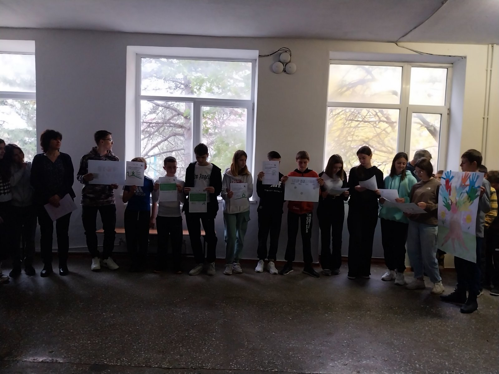{kind=link}
{kind=link}
{kind=link}
{kind=link}
Bine ați venit în lumea cunoașterii! Fie ca acest an școlar să fie plin de descoperiri minunate și prieteni noi. Un nou început, o nouă pagină în cartea vieții voastre. Vă dorim multă baftă, perseverență și să învățați lucruri interesante. Stimați profesori sunteți ghizii care ne îndrumă spre cunoaștere. Vă mulțumim pentru dăruire și pasiune! Dragi părinți felicitări pentru copiii minunați pe care îi aveți! Sprijinul vostru este esențial în această călătorie a cunoașterii. Părinților și elevilor: Fie ca acest an școlar să fie unul plin de realizări pentru întreaga familie.
Activități în cadrul atestării
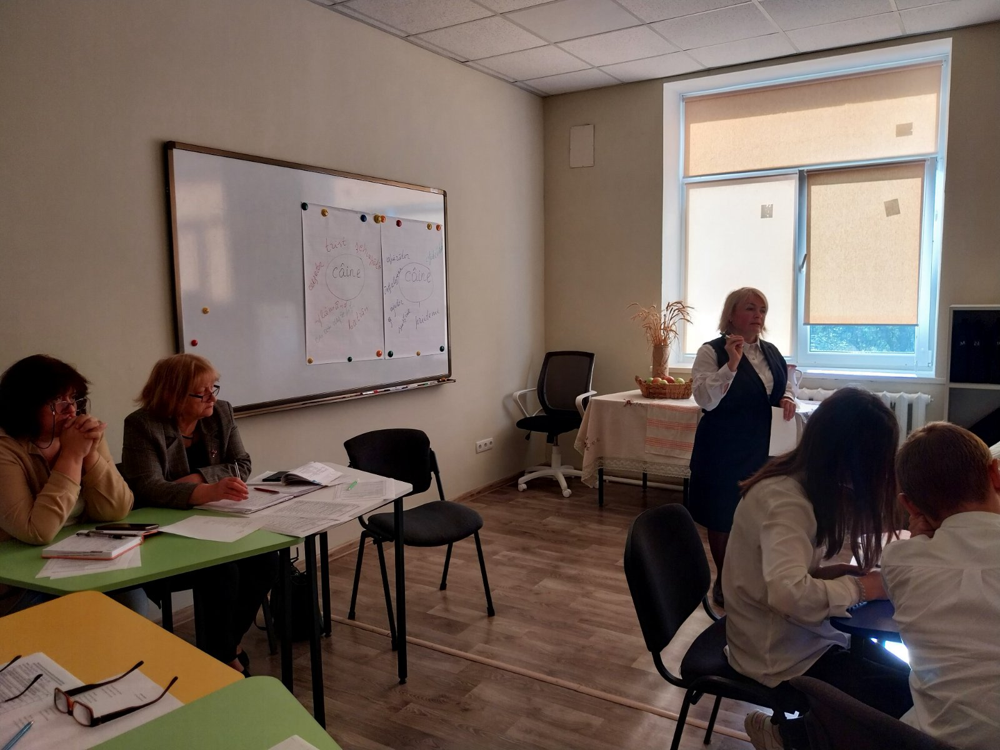{kind=link}


{kind=link}
Recent în gimnaziu s-au desfășurat ore publice organizate în cadrul atestării. Doamna Perebinos, profesoară de Limba și Literatura Română și de Istorie, alături de doamna Ivancenco, cadru didactic de sprijin, demonstrează competență profesională și un devotament remarcabil față de munca lor. Profesori depun eforturi deosebite pentru a respecta normele și a asigura o educație de calitate. Dorim succese acestor cadrelor didactice.
Săptămâna ANTI BULLYING
În cadrul Campaniei de comunicare „Împreună fără bullying,” desfășurată începând cu data de 4 noiembrie la gimnaziu, au loc diverse activități tematice. În cadrul orelor de dirigenție, dezvoltare personală și educație prin film, au fost inițiate discuții despre fenomenul bullying-ului. Luni, la careul de lucru, elevii clasei a VII-a, coordonați de doamna Tulei Svetlana, psihologul școlar, au prezentat un flashmob impresionant pe această temă. De asemenea, fiecare clasă a realizat câte un afiș, exprimând atitudinea proprie față de acest fenomen grav.
Thanksgiving Day în gimnaziu
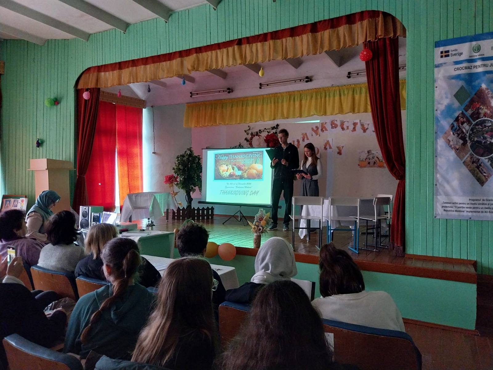 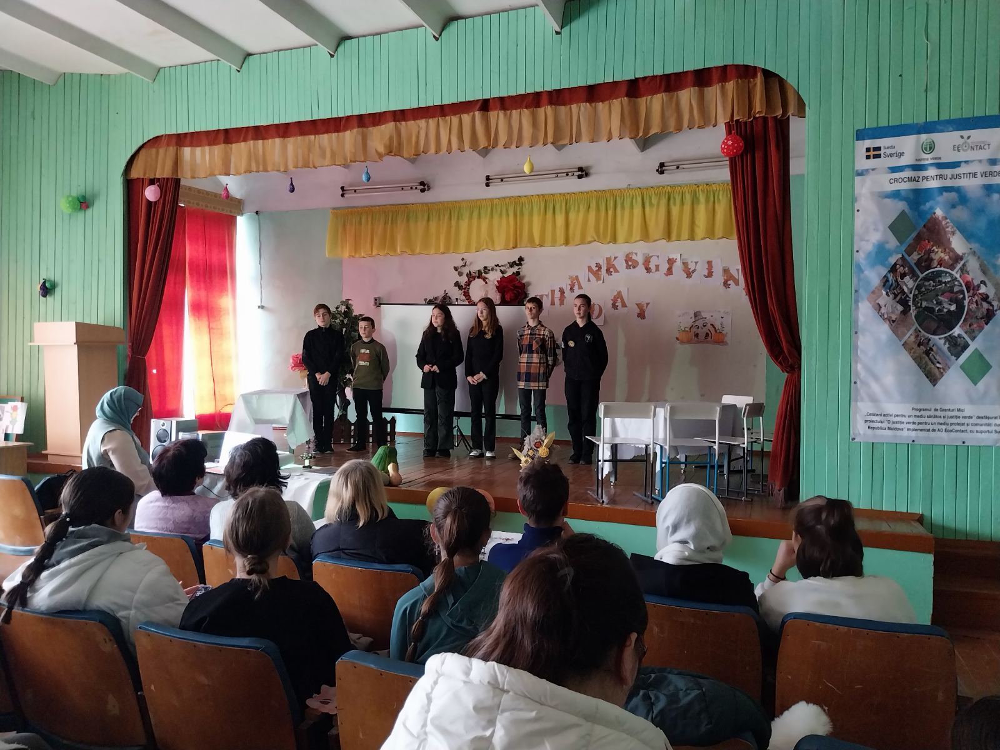{kind=link}
{kind=link}
{kind=link}
Thanksgiving Day - activitatea s-a desfășurat într-o atmosferă plină de creativitate și voie bună, reunind elevii claselor a VII-a, a VIII-a și a IX-a. Fiecare grup și-a adus contribuția prin scenete captivante și momente artistice pline de originalitate și distracție. Eforturile și entuziasmul elevilor au fost apreciate, iar cei mai implicați dintre ei au fost răsplătiți cu diplomă în cadrul careului. Mulțumiri speciale doamnei profesoare Olga Tabuncic Al Chihabi pentru coordonarea de excepție și sprijinul oferit în realizarea acestei activități!
Activități de parteneriat
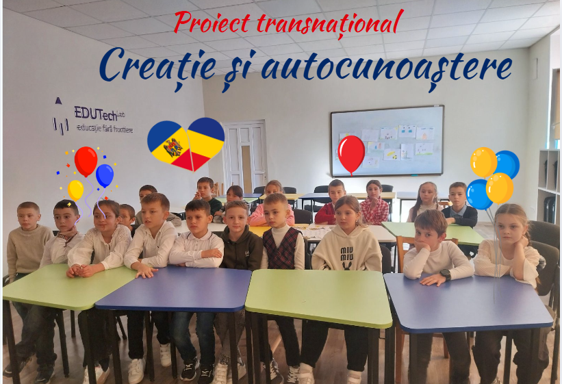{kind=link}
{kind=link}
{kind=link}
{kind=link}
Activitatea dedicată Zilei Naționale a României, organizată de cadre didactice ale ciclului primar cu sprijinul părinților, a fost un eveniment deosebit. Elevii au încântat publicul cu cântece, dansuri și poezii pline de emoție, toate dedicate plaiului natal. Mulțumim doamnei Grâu Ludmila, diriginta clasei a II-a, care se remarcă prin implicare și care desfășoară un parteneriat de colaborare cu Școala Gimnazială „Andrei Mureșanu” din Ploiești, coordonată de doamna profesor Monica Stoica, dirigintele clasei a IV-a.
Ziua Voluntarului
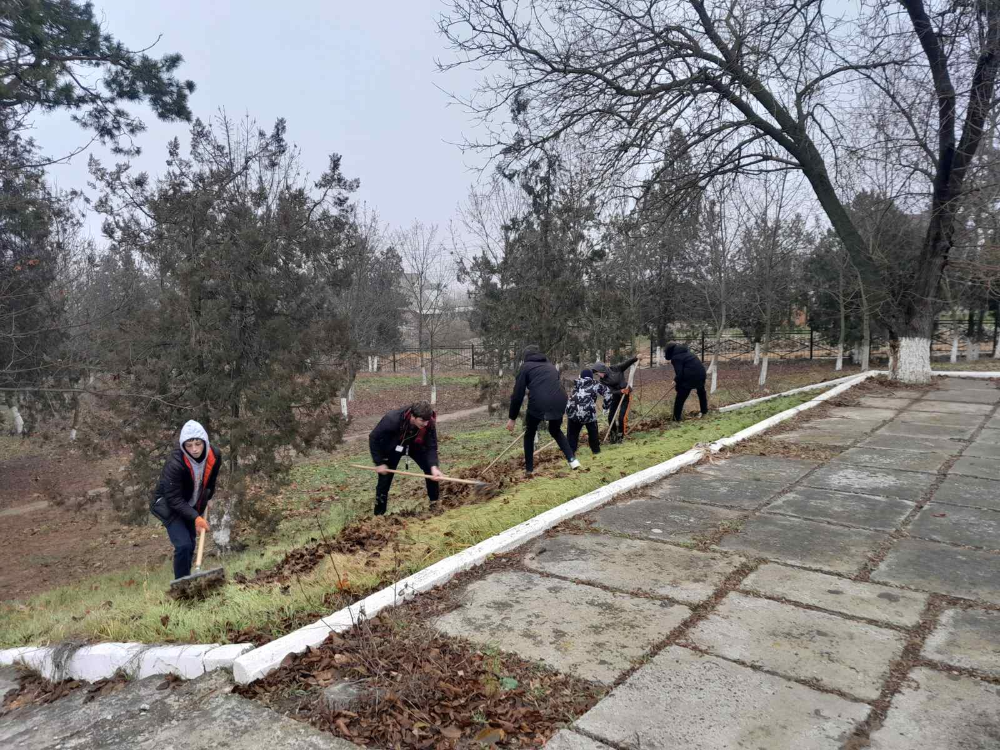 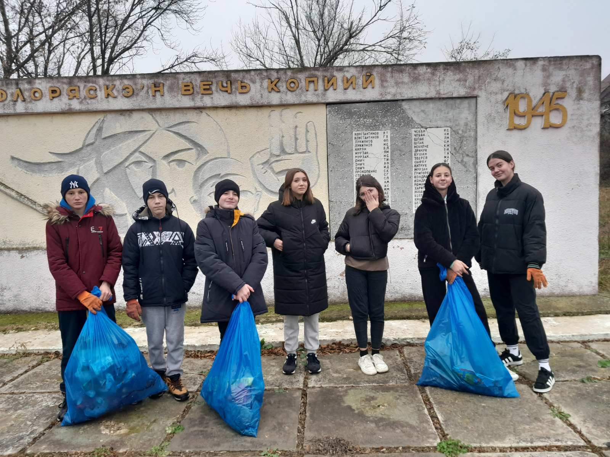 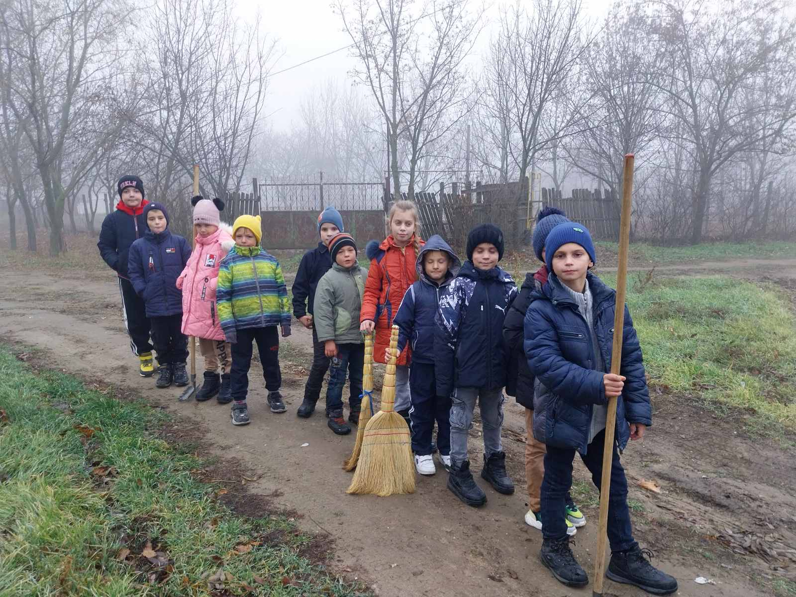 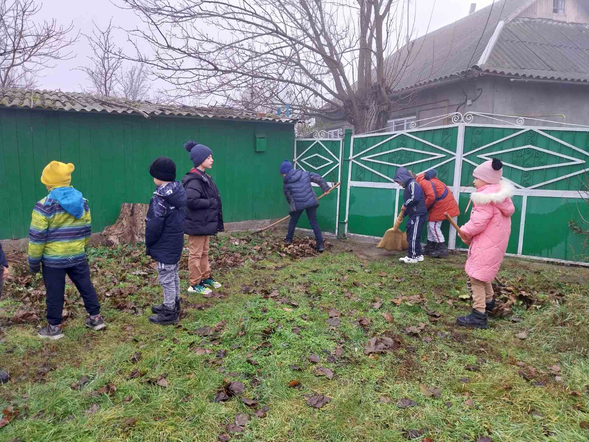{kind=link}
{kind=link}
{kind=link}
{kind=link}
{kind=link}
Ziua Voluntarului la Gimnaziul „Ec. Malcoci” – Activități de neuitat! Pe 5 decembrie, elevii de la Gimnaziul „Ec. Malcoci” au sărbătorit Ziua Voluntarului prin acțiuni de voluntariat, demonstrând implicare și spirit de solidaritate. Clasa a VIII-a ghidați de dirigintele Dîră Ilie, au fost la lacul din apropierea satului, unde au curățat și îngrijit zona, în timp ce un alt grup a mers la Cișmea, pe partea dreaptă a satului, și altul a ajuns la Nistru pentru a strânge gunoaiele.
Revelion 2025
{kind=link}

{kind=link}
 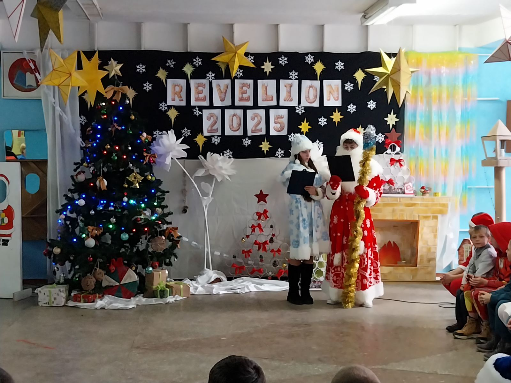
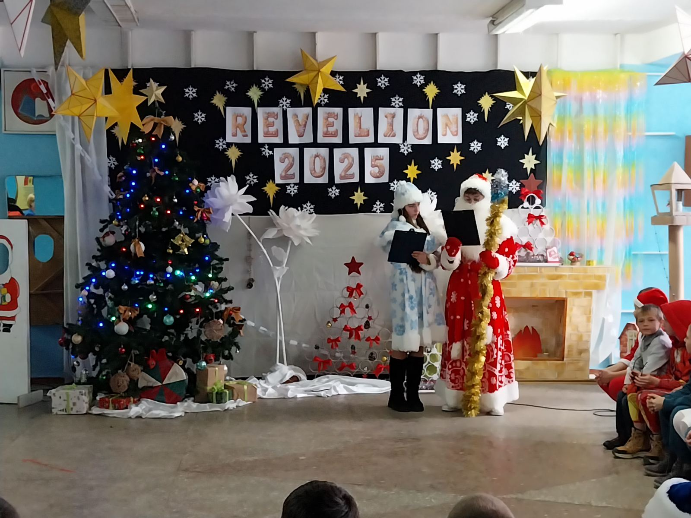
{kind=link}
Dragi părinți, Cu ocazia Sărbătorii Crăciunului, vă transmitem cele mai alese gânduri de bine. Fie ca aceasta sărbătoare să vă umple sufletele de pace, bucurie și speranță. Să aveți parte de sănătate, împliniri și clipe prețioase alături de cei dragi. Crăciun fericit și un An Nou plin de realizări! Cu respect: cadrele didactice ale Gimnaziului